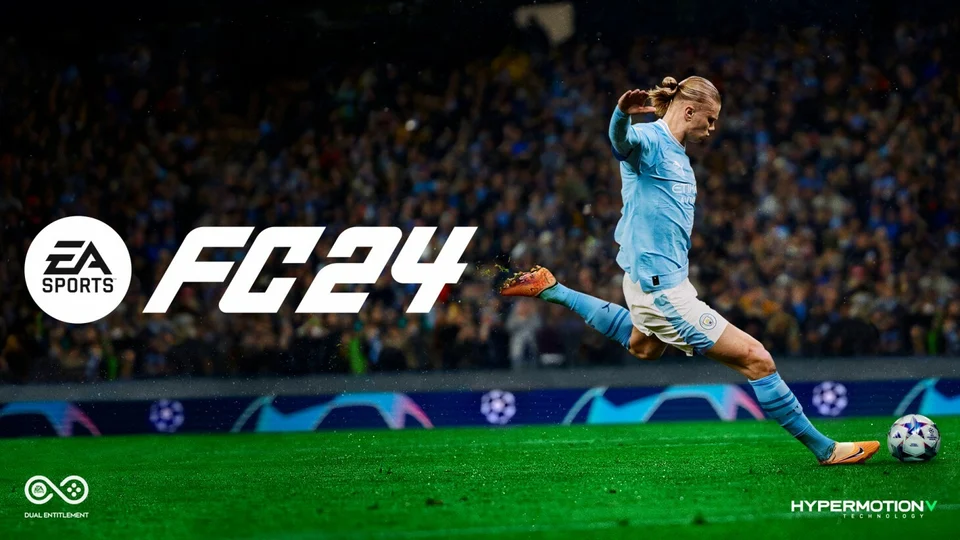

EA FC 2024
Following on from the fall out between EA and FIFA, this is the first game to be a stand alone EA game. For this the title of the game had to be changed from the iconic Fifa series to the new EA FC 2024. When the news broke about the partnership between EA and Fifa ending this caused fans to be worried about the direction the game would go especially with now not having the backing of Fifa for sponsorships. But they managed to release a new game with a new name but still keeping the origional features that fans have come to know from its predecessors. The game still has very similar features with updated teams and jerseys, ultimate team is still a similar format and other features that are synonymous with the franchise. There has been features improved such as graphics, performance and accessibility. Although there are still problems with the game that have been a prevelant issues with the last few titles in the franchise. There has been the issue with ultimate team and how "pay to win" game with the micro-transactions pushed on the player to succeed. There hasn't been many features changed which the fans have been upset about for the last multiple titles, but what the game does succeed at is what makes fans keep coming back for the new title each year. I would rate this game a 3.5/5.
Playstation Store Xbox Store Nintendo Switch Store Steam Store